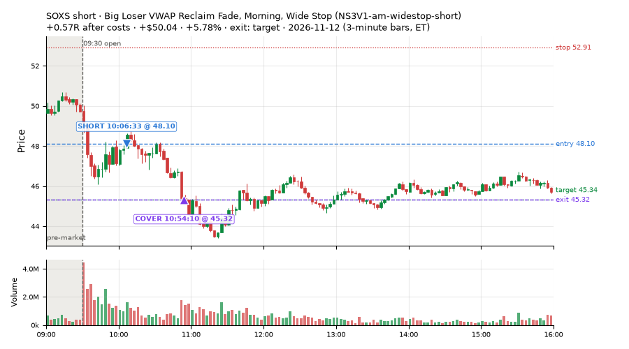
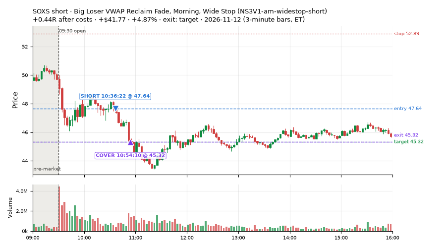
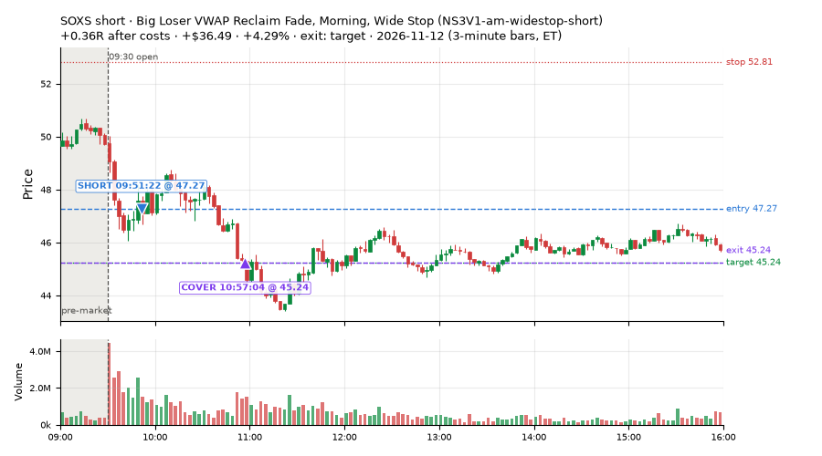
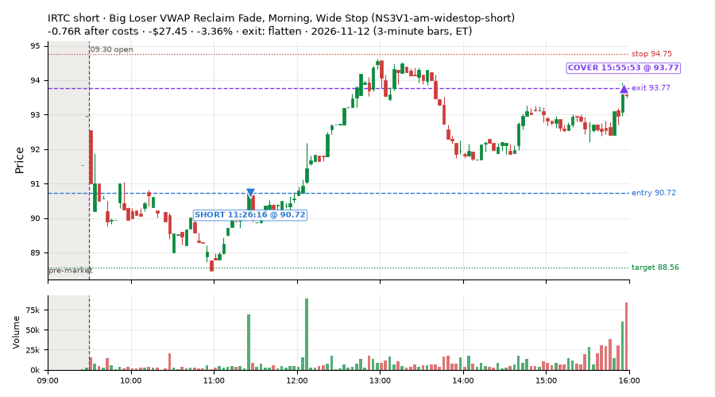
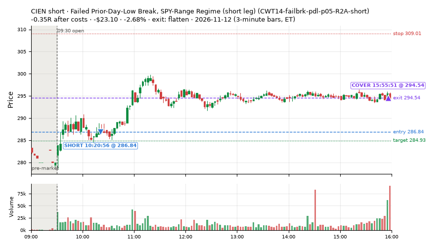
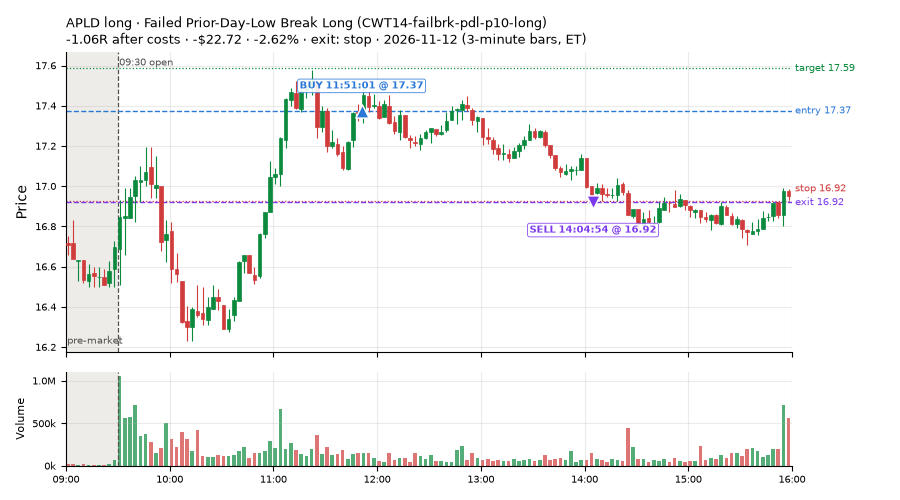
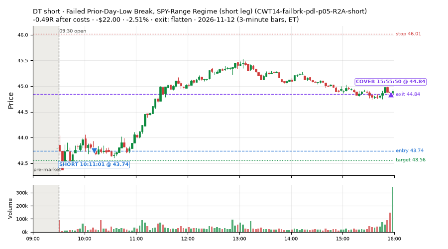
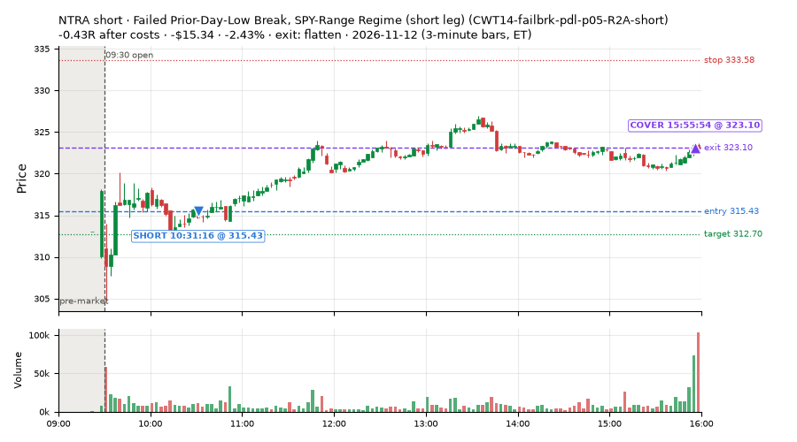

121 trades · win rate 69% · P/L $165.13
PROBATION: no live setup has passed both locked test periods. 10 owner-directed setups added 2026-10-08 (MarcoFlow top 5 + 5 new), untested live. RW6G1 (RW6 + VWAP band guard) added 2026-10-09, probation.

| Symbol | Setup | Side | In | Out | Entry | Exit | Exit reason | % gained | P/L |
|---|---|---|---|---|---|---|---|---|---|
| SOXS | Big Loser VWAP Reclaim Fade, Morning, Wide Stop (NS3V1-am-widestop-short) | short | 10:06 | 10:54 | 48.10 | 45.32 | target | +5.78% | $50.04 |
| SOXS | Big Loser VWAP Reclaim Fade, Morning, Wide Stop (NS3V1-am-widestop-short) | short | 10:36 | 10:54 | 47.64 | 45.32 | target | +4.87% | $41.77 |
| SOXS | Big Loser VWAP Reclaim Fade, Morning, Wide Stop (NS3V1-am-widestop-short) | short | 09:51 | 10:57 | 47.27 | 45.24 | target | +4.29% | $36.49 |
| Symbol | Setup | Side | In | Out | Entry | Exit | Exit reason | % lost | P/L |
|---|---|---|---|---|---|---|---|---|---|
| IRTC | NS3V1-am-widestop-short | short | 11:26 | 15:55 | 90.72 | 93.77 | flatten | -3.36% | $-27.45 |
| CIEN | CWT14-failbrk-pdl-p05-R2A-short | short | 10:20 | 15:55 | 286.84 | 294.54 | flatten | -2.68% | $-23.10 |
| APLD | CWT14-failbrk-pdl-p10-long | long | 11:51 | 14:04 | 17.37 | 16.92 | stop | -2.62% | $-22.72 |
| DT | CWT14-failbrk-pdl-p05-R2A-short | short | 10:11 | 15:55 | 43.74 | 44.84 | flatten | -2.51% | $-22.00 |
| NTRA | CWT14-failbrk-pdl-p05-R2A-short | short | 10:31 | 15:55 | 315.43 | 323.10 | flatten | -2.43% | $-15.34 |








Signal to fill: median 2s, 90th percentile 5s (121 trades). Bars close each minute; the order follows the bar close.
Best excursion (MFE): median 0.19R; worst (MAE) median 0.26R. 55% of trades never got +0.25R in our favour; 1 reached +1R and still closed at or below 0.
| Symbol | Setup | Best R | Worst R | Closed R |
|---|---|---|---|---|
| AMBA | CWT14-failbrk-pdl-p10-long | +1.28 | -0.95 | -0.64 |
| LULU | CWT14-failbrk-pdl-p10-long | +0.72 | -1.22 | -1.12 |
| BROS | CWT14-failbrk-pdl-p10-long | +0.44 | -1.03 | -1.10 |
| ALK | CWT14-failbrk-pdl-p10-long | +0.25 | -1.10 | -1.27 |
| APLD | CWT14-failbrk-pdl-p10-long | +0.30 | -1.01 | -1.06 |
| Entry time | Trades | Win | Avg R | P/L |
|---|---|---|---|---|
| 09:50-10:30 | 56 | 75% | +0.15 | $169.33 |
| 10:30-11:30 | 39 | 64% | +0.03 | $32.95 |
| 11:30-13:00 | 17 | 76% | -0.11 | $-27.15 |
| 13:00-14:00 | 2 | 50% | -0.49 | $-6.83 |
| 14:00-16:00 | 7 | 43% | -0.07 | $-3.17 |
| Setup | Trades | Win | Avg R after costs | Adj R (net of SPY) | Avg R ex-market (all sessions) | P/L |
|---|---|---|---|---|---|---|
| Stretched Below VWAP Bounce (CWT13-vwapstretch-z05-long) | 5.0 | 40% | -0.09 | +0.08 | +0.00 (beta +1.40, n 269) | $-1.90 |
| Failed Prior-Day-Low Break, SPY-Range Regime (short leg) (CWT14-failbrk-pdl-p05-R2A-short) | 46.0 | 67% | -0.03 | -0.06 | -0.08 (beta -0.20, n 78) | $-68.79 |
| Failed Prior-Day-Low Break Long (CWT14-failbrk-pdl-p10-long) | 51.0 | 67% | +0.03 | -0.29 | -0.10 (beta +1.15, n 621) | $31.48 |
| Sellers into Strength (all day) (MF5-flowsell-vwapup-rsi5hi) owner-directed; holdouts once: Sep-Oct -0.001R n264, Apr-Jun -0.010R n1199 | 4.0 | 100% | +0.66 | -0.07 | +0.13 (beta -0.91, n 33) | $14.74 |
| Gap-Down Capitulation Buy (near-miss) (NM-AR-AM-gapdown-capitulation-long) | 4.0 | 100% | +0.73 | +0.59 | -0.41 (beta +1.52, n 63) | $66.05 |
| Big Loser VWAP Reclaim Fade, Morning, Wide Stop (NS3V1-am-widestop-short) | 5.0 | 80% | +0.20 | +0.20 | -0.25 (beta -0.14, n 54) | $115.56 |
| exhaustion_short-FD | 6.0 | 83% | +0.01 | -0.29 | -0.07 (beta -0.78, n 106) | $7.99 |
Market direction (SPY, beta 1) accounted for $169.82 of today's $165.13; the rest ($-4.69) came from the setups themselves. Avg R net of SPY: -0.13 (incl. a hedge leg's cost; report only).
11 setups live today. Today: 297 signals, 121 taken, 21 lost because another setup held the symbol (7%). Since 2026-10-12 (24 sessions): 10353 signals, 5213 taken, 747 lost to other setups (7%). Peak open positions today 58 of 400 slots. Earnings blackout removed 576 symbols before scanning.
Simulated playing time (not live): 5122 what-if trades of signals not taken, avg -0.08R, 58% winners; of them 747 lost to another setup (avg -0.19R).
Silent: LD4-st4-breadthup-t1s05-long, LD8-spy-dip030-breadthturn-spxl-holdtr-long, LD1-ns1-breadthup-t05s1-long, CWT04-backside-lh-a25-short, CWT04-backside-vwaptest-a25-short · Crowded out: MF5-flowsell-vwapup-rsi5hi, NS3-failed-vwap-reclaim-short-FD · Starved: exhaustion_short-FD, NS5-sma50-flush-oversold-long-FD, RW4-ns3-adv150-short-FD, MF2-open-rsimidhi-flowsell
| Prio | Setup | Today sig / taken | Sessions | Signals / taken / trades | Taken/day | Expected/day | Lost to other setups | Lost to (setup n) | Top skip reasons | SIMULATED: not-taken n / avg R / win | Verdict |
|---|---|---|---|---|---|---|---|---|---|---|---|
| 1 | Big Loser VWAP Reclaim Fade, Morning, Wide Stop NS3V1-am-widestop-short | 9 / 5 | 15 | 122 / 54 / 54 | 3.60 | 5.30 | 3 | NS3V1-am-widestop-short 3, NM-RWR3-ns3-qqqup-early-short 1, NM-RWN3-ns3-spyup-early-short 1 | spread / quote / size 33, not shortable / shorts off 32, symbol held by another setup 3 | 68 / -0.03R / 60% | ok 18.0 entries/week |
| 2 | Gap-Down Capitulation Buy (near-miss) NM-AR-AM-gapdown-capitulation-long | 7 / 4 | 19 | 96 / 63 / 63 | 3.32 | – | 1 | CWT14-failbrk-pdl-p05-R2A-short 1 | spread / quote / size 31, symbol held by another setup 1, other 1 | 33 / -0.07R / 48% | ok 16.6 entries/week |
| 3 | Early Sellers into a Pop (index down, no gap up) (near-miss) NM-MF3-qqqdn-gapdn-FD | 0 / 0 | 17 | 58 / 34 / 34 | 2.00 | 4.90 | 4 | NM-AR-AM-gapdown-capitulation-long 4 | not shortable / shorts off 10, spread / quote / size 9, symbol held by another setup 4 | 24 / +0.27R / 62% | slow 10.0 entries/week; ~6 weeks to 60 trades |
| 4 | Early Sellers, Strong Heat MF4-h40-open-flowsell | 10 / 0 | 2 | 14 / 3 / 3 | 1.50 | 7.24 | 0 | – | spread / quote / size 10, not shortable / shorts off 1 | 11 / -0.84R / 9% | watch 1.50 entries/day vs ~7.24 expected |
| 5 | Stretched Above VWAP Fade (far) CWT13-vwapstretch-z075-short | 0 / 0 | 24 | 46 / 25 / 25 | 1.04 | – | 0 | – | not shortable / shorts off 10, daily loss cap 4, spread / quote / size 3 | 21 / -0.47R / 29% | slow 5.2 entries/week; ~12 weeks to 60 trades |
| 6 | Sellers into Strength (all day) MF5-flowsell-vwapup-rsi5hi | 9 / 4 | 17 | 70 / 33 / 33 | 1.94 | 15.47 | 21 | MF5-flowsell-vwapup-rsi5hi-FD 19, NM-AR-AM-gapdown-capitulation-long 1, CWT14-failbrk-pdl-p05-R2A-long 1 | symbol held by another setup 21, spread / quote / size 7, other 7 | 37 / -0.04R / 51% | crowded-out 21 of 70 signals (30%) lost to setups already holding the symbol |
| 7 | exhaustion_short-FD exhaustion_short-FD | 15 / 6 | 17 | 172 / 106 / 106 | 6.24 | 64.64 | 3 | CWT12-coil-k4-long 3 | not shortable / shorts off 37, spread / quote / size 20, other 6 | 66 / -0.12R / 46% | starved 6.24 entries/day vs ~64.64 expected |
| 8 | Failed Prior-Day-Low Break, SPY-Range Regime (long leg) CWT14-failbrk-pdl-p05-R2A-long | 0 / 0 | 9 | 201 / 136 / 136 | 15.11 | – | 6 | RW3S-gapdn-flowsell-short-FD 6 | spread / quote / size 59, symbol held by another setup 6 | 64 / -0.11R / 61% | ok 75.6 entries/week |
| 9 | Failed Prior-Day-Low Break, SPY-Range Regime (short leg) CWT14-failbrk-pdl-p05-R2A-short | 115 / 46 | 9 | 184 / 78 / 78 | 8.67 | – | 39 | CWT14-failbrk-pdl-p10-long 39, CWT14-failbrk-pdl-p10-lowvol-long 8 | spread / quote / size 63, symbol held by another setup 39, not shortable / shorts off 4 | 105 / +0.02R / 70% | ok 43.3 entries/week |
| 10 | Stretched Below VWAP Bounce CWT13-vwapstretch-z05-long | 11 / 5 | 23 | 540 / 269 / 269 | 11.70 | – | 3 | CWT14-failbrk-pdh-p05-lowvol-short 1, CWT09-gapdn-vwaploss-g10-short 1, CWT09-gapdn-bounce-g10-lowerhalf-short 1 | daily loss cap 152, spread / quote / size 57, other 56 | 270 / -0.10R / 60% | ok 58.5 entries/week |
| 11 | Failed Prior-Day-Low Break Long CWT14-failbrk-pdl-p10-long | 121 / 51 | 24 | 1040 / 621 / 621 | 25.88 | – | 28 | CWT14-failbrk-pdl-p10-lowvol-long 15, CWT14-failbrk-pdl-p05-lowvol-long 4, RW3S-gapdn-flowsell-short-FD 4 | spread / quote / size 256, other 85, daily loss cap 31 | 415 / -0.01R / 66% | ok 129.4 entries/week |
Every trade is attached as a CSV you can open and edit in Excel or Google Sheets. Live page: https://misiti15.github.io/MCF/live/